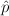

This utility performs calculations for testing claims about the difference of two population proportions. A normal distribution is used for approximation. The null hypothesis of a claim about the difference of two population proportions p1 and p2 is p1 = p2. The alternative hypothesis can be one of the following: p1 < p2, p1 > p2, or p1 ≠ p2.
The user has the option of using a pooled estimate of the sample proportions p1 = x1 / n1 and p2 = x2 / n2. The pooled esimate is given by:
The test statistics z, calculated using the pooled estimate is:
where  is the sample proportion, p is the hypothesized population proportion, and n is the sample size.
The test statistics calculated without using the pooled estimate is given by:
The sample data of the population must be of only two categories. They can be provided in one of three ways:
The Significance Level or Confidence Level must be between 0 and 1. For example, enter 0.95 for a 95% confidence level.
The Alternative Hypothesis can be one of the following forms: Less than (p1 < p2), Not Equal to (p1 ≠ p2), or Greater than (p1 > p2). Enter the Hypothesized Proportion Difference (p1 - p2) in the provided text box.
Select the Use pooled estimate check box if the pooled estimate is appropriate for combining the samples.